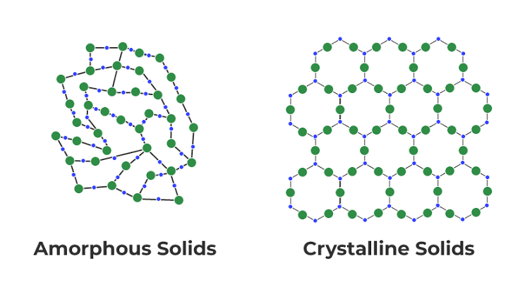

Based on the arrangement of atoms or molecules, solid materials can be fundamentally divided into two categories: Crystalline or Amorphous[cite: 12, 13].
- Crystalline Materials: These are materials with a highly ordered arrangement of atoms[cite: 12]. The atoms are situated in a repeating array over large atomic distances, which is known as having a "long-range order"[cite: 12].
- Amorphous Materials: Also known as non-crystalline materials, these feature a random arrangement of atoms or molecules[cite: 12]. In amorphous materials, long-range atomic order is completely absent[cite: 12]. Most polymers fall into this category[cite: 12].

Practice Exercises
Test your knowledge on Crystalline and Amorphous structures.
1. What defines a crystalline material?
A) A random arrangement of atoms
B) An ordered arrangement of atoms over large distances
C) The complete absence of atomic structure
2. What defines an amorphous material?
A) Atoms situated in a repeating array
B) A random arrangement of atoms lacking long-range order
C) A strict metallic lattice
3. Which of the following is typically an example of an amorphous material?
A) Polymers
B) Pure Iron
C) Diamond
4. What type of structural order is completely absent in amorphous materials?
A) Short-range atomic order
B) Long-range atomic order
C) Electron spin order